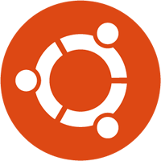

Ubuntu MATE is an operating system -- software that runs your computer, like Microsoft's Windows, Apple's Mac OSX or Google's ChromeOS. Ubuntu MATE is distribution (version) of Linux, a dependable, secure, capable, and modern computer system that rivals all others in popularity and actual use.
Unlike those other three, Linux is a major operating system that is used:
- on most of the world's fastest and most powerful supercomputers
- on many of (if not most of) the computers that make up the backbone of Internet
- and on corporate servers that require stability and reliability
Ubuntu MATE is a stable, easy-to-use operating system with a configurable desktop environment. It is ideal for those who want the most out of their computers and prefer a traditional desktop metaphor. With modest hardware requirements, it is suitable for modern desktops and laptops, micro computers (such as the Raspberry Pi 2) and older hardware alike.
The operating system is more secure, and better supported than the operating system pre-installed on most home computer hardware today.
Using Ubuntu MATE provides you with the freedom to run a complete, full-featured operating system, pre-configured with most, if not all, of the applications you will need for your daily computing, or to change anything about the way it looks, the way it works, or the applications it runs to suit your taste.
Objectives
Ubuntu MATE has a number of guiding objectives and goals:
- Accessible to all, regardless of language and physical ability.
- Increase both Ubuntu and MATE Desktop user adoption.
- Ubuntu alternative for computers that aren't powerful enough to run a composited desktop.
- First choice Ubuntu platform for remote workstation solutions such as LTSP and X2Go.
- Recreate the halcyon days of Ubuntu for users who prefer a traditional desktop metaphor.
- Use themes and artwork similar to Ubuntu so that Ubuntu MATE is immediately familiar.
- When possible contribute to Debian so both the Debian and Ubuntu communities benefit.
- Software selection will favour functionality and stability over lightness and whimsy.
What is Ubuntu MATE?
Ubuntu
Ubuntu is one of, if not the, largest deployed Linux based desktop operating systems in the world. Linux is at the heart of Ubuntu and makes it possible to create secure, powerful and versatile operating systems, such as Ubuntu and Android. Android is now in the hands of billions of people around the world and it's also powered by Linux.
Ubuntu is available in a number of different flavours, each coming with its own desktop environment. Ubuntu MATE takes the Ubuntu base operating system and adds the MATE Desktop.
MATE Desktop
Wikipedia says that a Desktop Environment is:
an implementation of the desktop metaphor made of a bundle of programs running on top of a computer operating system, which share a common graphical user interface (GUI). Desktop GUIs help the user to easily access and edit files.
The MATE Desktop is one such implementation of a desktop environment and includes a file manager which can connect you to your local and networked files, a text editor, calculator, archive manager, image viewer, document viewer, system monitor and terminal. All of which are highly customisable and managed via a control centre.
MATE Desktop provides an intuitive and attractive desktop environment using traditional metaphors, which means if you've ever used Microsoft Windows or Apple Mac OS, it will feel very familiar.
The MATE Desktop has a rich history and is the continuation of the GNOME2 desktop, which was the default desktop environment on many Linux and Unix operating systems for over a decade. This means that MATE Desktop is tried, tested and very reliable.
Open Source

What Linux, Ubuntu and MATE Desktop all have in common is they are Open Source. Open source software is software that can be freely used, changed, and shared (in modified or unmodified form) by anyone. In a nutshell Ubuntu MATE is free, in the truest sense of the word.
Although you will find some versions (distributions) of Linux for purchase, the vast majority are provided free of charge, like Ubuntu MATE. Open Source software is licensed in a way that allows anyone to give it away for free, no strings attached. For example, the licence gives any member of the user community the freedom to use Linux for any purpose, to distribute, modify, redistribute, or even sell the operating system. If you do modify and then redistribute Linux with your modifications, you are required by the licence to submit your modifications for possible inclusion into future versions. There is no guarantee that this will ever happen, but if you have made it better, then your changes just might be included in the next release of Ubuntu MATE.
Many of the users of Linux are corporations that use the
operating system to run their businesses, or include it within
their products. Many of these corporations provide fixes and new
features for Linux as they use the software for their businesses.
These
improvements are given back to the Linux community and
Ubuntu MATE improves as a result. This is how we can continually
improve and grow without having to charge our users money.
Unlike Windows, and OSX, Linux is not created and supported
by just one company. It is supported by Intel, Redhat, Linaro,
Samsung, IBM, SUSE, Texas Instruments, Google, Canonical, Oracle,
AMD, and Microsoft. Over 4,000 developers contributed to Linux
over the last 15 years.
Whether you are a home user of Ubuntu MATE, a Ubuntu MATE software
or application developer, or an employee of an organisation that
uses the operating system, you are a member of the Linux and Open
Source communities and benefit from the efforts of the developers
who contribute to Ubuntu MATE and its related projects, Linux,
MATE, and Ubuntu. Members of the community can and do run
Linux on almost any hardware, from the prettiest Macbook to the
cheapest netbook, from the newest Chromebook to some very old
machines designed for Windows, and from the most powerful Internet
servers to the smallest smart thermostat.